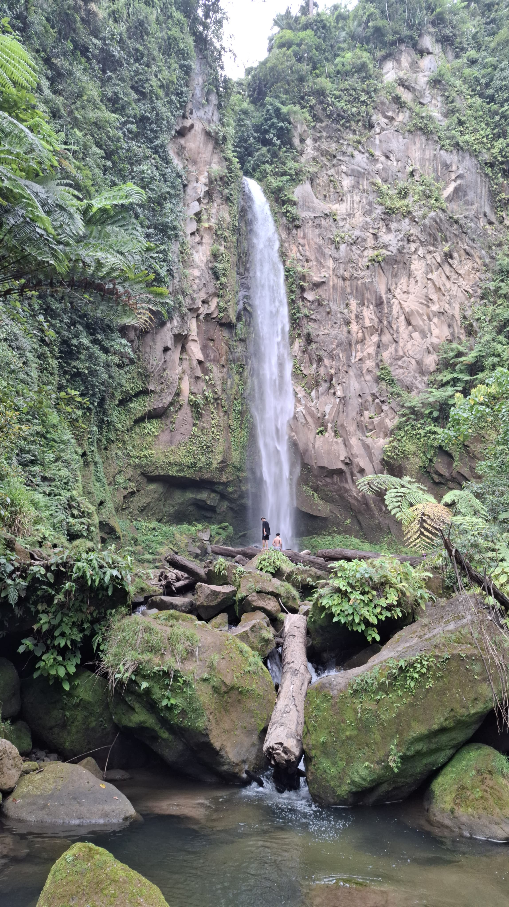
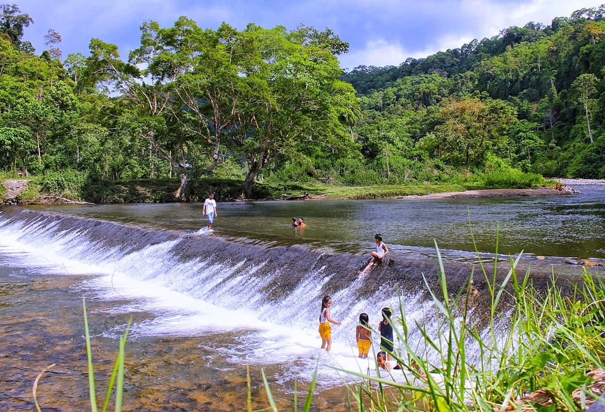

Keindahan Air Terjun Pesisir Barat
"Rasakan kesegaran gemercik air, keindahan alam yang menghijau, dan kedamaian di air terjun menakjubkan tersembunyi di pelosok Indonesia."
Mulai PetualanganAir Terjun Menakjubkan
Temukan keindahan air terjun spektakuler yang wajib dikunjungi di pesisir barat Indonesia

Air Terjun Way Keramian Malaya
📍 Pesisir Barat, Lampung
Destinasi alami luar biasa dengan ketinggian menjulang dan panorama yang menyegarkan jiwa.

Air Terjun Perlimbang
📍 Lampung, Indonesia
Air terjun megah dengan panorama hutan hijau dan suara alam yang menenangkan hati.

Bendungan Bimbin
📍 Pesisir Barat, Lampung
Bendungan alami dengan pemandangan yang damai dan cocok untuk bersantai di tengah alam.